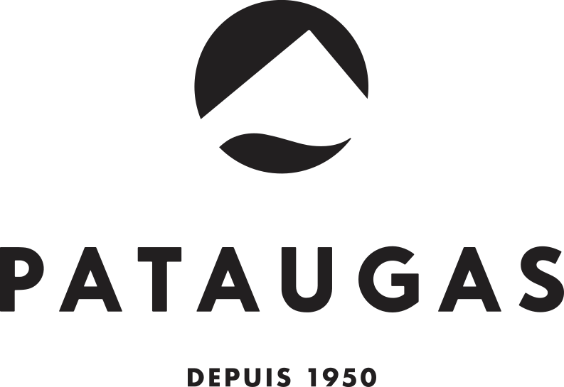

대표 로고대표 브랜드 마크
대표 로고대표 브랜드 마크파타가스 Pataugas
파타가스(Pataugas)는 1950년 프랑스 바스크 지방에서 시작된 아웃도어·캐주얼 신발 브랜드이다.
최종 업데이트
파타가스는 어떤 브랜드인가
파토가스(Pataugas)는 1950년 프랑스 바스크 지방 물레옹수르(Mauléon-Soule)에서 르네 엘리사비드가 창립한 신발 브랜드다. 두꺼운 톱니 고무창을 얹은 캔버스 등산화 브로드켕에서 출발했고, 이름은 가스 버너로 고무를 가황한 제조법 '파트 오 가즈(pâte au gaz)'에서 유래했다.
첫 전환점은 인도차이나·알제리 전장에 정글부츠를 공급하며 군용 아이콘이 된 1950~60년대, 두 번째는 1987년 그룹 앙드레(이후 비바르테) 인수로 대량 유통망에 올라탄 시기다. 전성기 공장은 하루 4천 켤레를 만들며 인력이 1년 새 40배로 불었고, 브랜드명은 프랑스어 사전에 보통명사로 등재될 만큼 대중화됐다.
파타가스는 어떻게 봐야 할까
파토가스의 핵심 차별점은 '제품 그 자체가 어휘가 된' 헤리티지다. 캔버스 어퍼와 톱니 고무창의 단일 원형이 70년 넘게 변주되며, 드골 장군의 호평과 미테랑 대통령의 착용, 1955년 '세 에체'의 도보 프랑스 일주 같은 서사가 브랜드의 정통성을 떠받친다.
1980년대 침체 이후 전략은 두 축으로 정리된다. 첫째, 2000년대 아녜스 베와 장폴 고티에 협업으로 워크웨어를 패션 영역으로 끌어올린 디자이너 재해석.
둘째, 최근 6년간 아이코닉 브로드켕에 집중해 '어반 아웃도어' DNA와 다소 프리미엄한 결을 강화한 재포지셔닝이다. 시장 함의는 분명하다.
군용·등산 기능재가 도시 캐주얼 자산으로 전이되는 전형적 헤리티지 전략이며, 고프코어와 워크부츠가 강세인 한국 독자에게는 마르탱·블런드스톤·솔로비에르와 같은 '기능에서 출발한 유러피언 데일리 슈즈' 계보로 읽힌다.
파타가스는 어떻게 시작되고 성장했나
파토가스의 탄생 배경에는 전후 프랑스 산악 노동·도보 문화가 있다. 바스크 물레옹수르의 산업가 르네 엘리사비드는 등산을 즐기다 1948년경 지역 전통 캔버스화 브로드켕을 재해석해, 가볍고 질기며 두꺼운 톱니 밑창을 단 하이 캔버스화를 구상했다.
아이들이 거리에서 고무를 가지고 노는 모습에서 착안해 등산화에 고무창을 접목했고, 접착력과 내구성을 높이려 가스 불로 밑창을 가황하는 기법을 고안했다. 이것이 이름의 어원 '파트 오 가즈'다.
정식 출범은 1950년이며 첫 모델은 '로탕티크(L'Authentique)'로 불린다. 첫 전환점은 군 납품이다.
프랑스군과 외인부대가 인도차이나·알제리에 파병되며 파토가스 부시부트는 M1949 부시햇과 함께 탈식민 전쟁기의 상징이 됐다. 두 번째 전환점은 자본·유통 편입으로, 1987년 그룹 앙드레(후일 비바르테)에 인수되며 라인업을 다변화했다.
생산은 1995년까지 물레옹에 남았다가 이후 저비용 국가로 이전됐으며, 2000년대 디자이너 협업으로 패션 무대에 재진입했다.
파타가스의 브랜드 아이덴티티는 무엇인가
브랜드 가치는 정통성·내구성·프랑스 장인 정신에 뿌리를 둔다. 비주얼 아이덴티티의 중심은 변하지 않는 원형, 즉 캔버스 또는 가죽 어퍼에 두꺼운 톱니 고무창을 결합한 브로드켕 실루엣이며, 최근에는 가죽 부츠 중심의 헤리티지 라인과 포르투갈 생산을 내세운다.
타깃은 군용·등산 헤리티지의 진정성을 선호하면서도 도시적 캐주얼을 찾는 남녀 성인으로, 옥타비 같은 네오 파토가스 모델로 동시대 감각을 더한다. 브랜드 보이스는 영웅적 과장보다 담담한 유산 서술에 가깝다.
사전에 등재된 보통명사라는 사실, 드골·미테랑·도보 일주 같은 일화, 아녜스 베와 장폴 고티에의 재해석을 절제된 톤으로 환기하며 '실용에서 태어난 프랑스 아이콘'이라는 자기 정의를 일관되게 유지한다.
파타가스의 대표 제품과 서비스는 무엇인가
취급 품목은 아이코닉 브로드켕(앵클·하이 캔버스화)을 축으로 가죽 부츠, 레인 부츠, 스니커즈와 발레리나·테니스 등 캐주얼 슈즈로 확장된다. 헤리티지 라인은 가죽 부츠, 협업 컬렉션은 마리니에르·레지유 패턴의 로탕티크와 발레리나를 포함한다.
생산은 프랑스와 포르투갈을 오가며, 유통은 자사 온라인몰과 르 봉 마르셰 등 백화점, 스파르투·스몰러블 같은 멀티 리테일러를 통해 이뤄진다.
파타가스는 지금 어떤 상태인가
본사는 프랑스이며, 브랜드 소유권은 2023년 가족기업 VGM 홀딩(샹세아 모회사, 그리에코 가문)으로 이전됐다. 직전에는 2017년부터 홉스 그룹이, 1987년부터 2017년까지는 그룹 앙드레/비바르테가 보유했다.
VGM 홀딩은 파토가스가 독립적으로 운영되며 품질·디자인 유산을 유지·강화하고 글로벌 확장을 위한 추가 자원을 투입한다고 밝혔다. 매출 규모, 매장 수 등 세부 경영 지표는 미공개.
파타가스 로고는 어떻게 변해왔나
대표 로고대표 브랜드 마크
대표 로고 1보관 이미지 1자주 묻는 질문
파타가스는 어느 나라 브랜드인가요?
파타가스는 프랑스의 패션·럭셔리 브랜드입니다.
파타가스는 언제 설립되었나요?
파타가스는 1950년 설립되었습니다.
파타가스의 브랜드 아이덴티티는 무엇인가요?
브랜드 가치는 정통성·내구성·프랑스 장인 정신에 뿌리를 둔다.
파타가스의 대표 제품은 무엇인가요?
취급 품목은 아이코닉 브로드켕(앵클·하이 캔버스화)을 축으로 가죽 부츠, 레인 부츠, 스니커즈와 발레리나·테니스 등 캐주얼 슈즈로 확장된다.
파타가스의 본사는 어디에 있나요?
본사는 프랑스이며, 브랜드 소유권은 2023년 가족기업 VGM 홀딩(샹세아 모회사, 그리에코 가문)으로 이전됐다.
파타가스의 창업자는 누구인가요?
파타가스의 창업자는 René Elissabide입니다(위키데이터 기준).
파타가스의 공식 웹사이트는 어디인가요?
파타가스의 공식 웹사이트는 https://www.pataugas.com/ 입니다.
출처와 검증
파타가스 관련 참고: 공식 웹사이트 · 위키데이터 Q3368657 · 영어 위키백과. 브랜드명은 한글과 원어를 함께 표기하되 데이터에 없는 표기는 만들지 않습니다. 기원 국가·설립연도는 검수된 정의문에서 확인된 값을 우선하고, 없을 때만 공식 웹사이트 URL이 일치하는 위키데이터 개체의 값을 씁니다. 위키데이터 값은 2026-09-07 기준입니다.